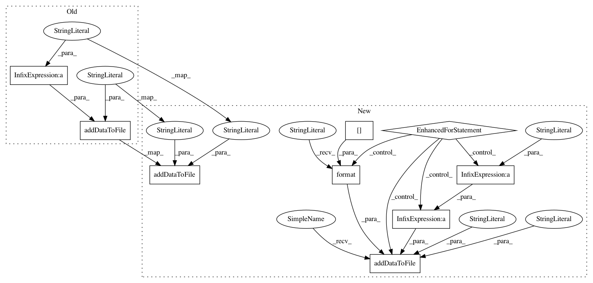

f569613a20dd6b854179dc92cb065df634cceb6d,logsProcess.py,LogsProcess,process_global_data,#LogsProcess#,133
Before Change
tuples = __database__.getOutTuplesfromProfileTW(profileid, twid)
if tuples:
// Add tuples
self.addDataToFile(profilefolder + "/" + twlog, "OutTuples:\n"+ tuples, file_mode="a+", data_type="json")
self.outputqueue.put("03|logs|\t\t[Logs] Tuples: " + tuples)
// 4. Detections to block
blocking = __database__.getBlockingRequest(profileid, twid)
if blocking:
After Change
tuples = __database__.getOutTuplesfromProfileTW(profileid, twid)
if tuples:
// Add tuples
self.addDataToFile(profilefolder + "/" + twlog, "OutTuples:", file_mode="a+", data_type="text")
data = json.loads(tuples)
for key in data:
self.addDataToFile(profilefolder + "/" + twlog, "\t{} ({})".format(key, data[key]), file_mode="a+", data_type="text")
self.outputqueue.put("03|logs|\t\t[Logs] Tuples: " + tuples)
// 4. Detections to block
blocking = __database__.getBlockingRequest(profileid, twid)
if blocking:
self.addDataToFile(profilefolder + "/" + twlog, "Was requested to block in this time window: " + str(blocking), file_mode="a+", data_type="json")
self.outputqueue.put("03|logs|\t\t[Logs] Blocking Request: " + str(blocking))
// 5. Info of dstport as client, tcp, established
dstportdata = __database__.getDstPortClientTCPEstablishedFromProfileTW(profileid, twid)
if dstportdata:
self.addDataToFile(profilefolder + "/" + twlog, "As a client, Dst Ports we connected with TCP Established flows:", file_mode="a+", data_type="text")
for port in dstportdata:
self.addDataToFile(profilefolder + "/" + twlog, "\tPort {}. Total Flows: {}. Total Pkts: {}. TotalBytes: {}".format(port, dstportdata[port]["totalflows"], dstportdata[port]["totalpkt"], dstportdata[port]["totalbytes"]), file_mode="a+", data_type="text")
self.outputqueue.put("03|logs|\t\t[Logs]: DstPortData: {}".format(dstportdata))
// 6. Info of dstport as client, udp, established
dstportdata = __database__.getDstPortClientUDPEstablishedFromProfileTW(profileid, twid)
if dstportdata:
In pattern: SUPERPATTERN
Frequency: 3
Non-data size: 9
Instances
Project Name: stratosphereips/StratosphereLinuxIPS
Commit Name: f569613a20dd6b854179dc92cb065df634cceb6d
Time: 2019-02-26
Author: eldraco@gmail.com
File Name: logsProcess.py
Class Name: LogsProcess
Method Name: process_global_data
Project Name: stratosphereips/StratosphereLinuxIPS
Commit Name: d564bccd0f32718d894f9763b08fc185fa28eb36
Time: 2019-02-26
Author: eldraco@gmail.com
File Name: logsProcess.py
Class Name: LogsProcess
Method Name: process_global_data
Project Name: stratosphereips/StratosphereLinuxIPS
Commit Name: 5cc39c4b62cb4d92e83dcd76af64b6c9256e787b
Time: 2019-02-26
Author: eldraco@gmail.com
File Name: logsProcess.py
Class Name: LogsProcess
Method Name: process_global_data